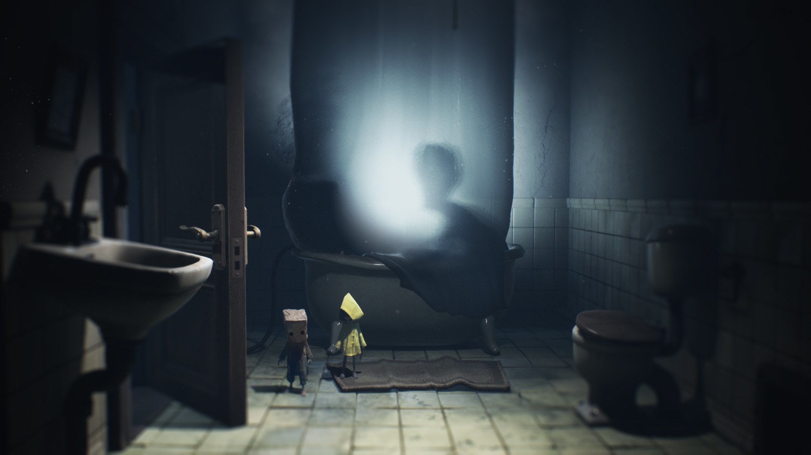

Volvemos a adentrarnos en el universo de los miedos de la infancia para superar los dos primeros niveles de una secuela que apunta a convertirse en uno de los primeros juegazos de 2021.
Hay muchas formas de hacer una secuela, pero una de las que mejor suelen funcionar es la de apostar por el clásico "más y mejor" de lo visto en la entrega original. Little Nightmares fue una de las sorpresas más agradables que nos dejó la pasada generación, un humilde y pequeño título de terror que supo dejar huella con su apabullante diseño artístico, sus tensas situaciones y su críptica y terrorífica historia. Una aventura con muchísima personalidad y con un encanto único que nos conquistó y que ahora está a punto de recibir una segunda parte que apuesta precisamente por expandir y mejorar la fórmula en todos los sentidos posibles e imaginables.
Esto no es algo que nos pille de nuevas, ya que fue justo lo que os comentamos en octubre cuando pudimos probar una demo a la que nos dieron acceso, pero ahora, a tan solo un mes de su lanzamiento final y tras haber jugado sus dos primeras fases de principio a fin, podemos confirmaros que el trabajo de Tarsier Studios con este nuevo juego nos está pareciendo impecable.
Explorando el mundo de los miedos de la infancia
Así pues, esta vez volvemos a encontrarnos ante una aventura lineal que combina con mucho acierto sigilo, resolución de puzles y ligeros toques tanto de plataformas como de combates. De esta manera, deberemos avanzar por una serie de siniestros escenarios intentando sobrevivir a los cientos de peligros que nos aguardan en ellos, desde trampas colocadas con muy mala idea hasta temibles criaturas que buscarán acabar con nosotros en cuanto se percaten de nuestra presencia.
Los escenarios vuelven a ser los principales narradores de esta nueva historia.
Tal y como podréis suponer, la narrativa es heredera directa de lo visto en la primera entrega, así que no esperéis diálogos de ningún tipo ni explicaciones claras de lo que ocurre, ya que la historia de este universo se nos cuenta a través de sus escenarios, personajes y situaciones. Tanto es así que cuando iniciemos una nueva partida no hay un vídeo introductorio ni nada parecido y empezaremos controlando directamente a Mono, el nuevo y misterioso protagonista, quien por algún motivo se encuentra en mitad de un bosque. ¿Quiénes somos? ¿Por qué estamos ahí? ¿Qué está pasando exactamente? Estas son preguntas que tendremos que responder por nosotros mismos prestando muchísima atención a todo lo que nos rodea, una técnica de narración que cuando se hace tan bien como en este caso nos encanta y ayuda a hacer que todo resulte más desconcertante y terrorífico.
Pero sin duda, el plato fuerte lo tenemos en el diseño de niveles y escenarios, probablemente el aspecto que más nos ha sorprendido de todo lo que hemos jugado. Uno de los mayores aciertos del estudio ha sido aumentar la escala del viaje, abandonando así las limitaciones de Las Fauces, el barco en el que se desarrollaba el original, para llevarnos a lo largo y ancho de su universo. Esto, además de transmitirnos la sensación de estar viviendo una gran aventura, ha permitido al equipo creativo ir mucho más allá y crear todo tipo de nuevas e inéditas situaciones con fases que no son solo mucho más diversas en lo visual, sino también en lo mecánico.
El cazador será el primer gran enemigo que se interpondrá en nuestro camino. Darle esquinazo en su bosque no será una experiencia apta para taquicárdicos.
Puede sonar exagerado, pero os aseguramos que cada paso que hemos dado ha sido una sorpresa constante y un auténtico derroche de creatividad y buenas ideas de diseño. Es muy complicado hablar de esto sin caer en spoilers, pero en la hora y media que hemos jugado no hemos vivido dos situaciones iguales. Siempre hemos tenido que hacer algo nuevo para evitar a los monstruos, los puzles son fáciles pero están muy bien pensados y la naturalidad con la que vamos pasando de un momento a otro casi sin darnos cuenta es increíble.
Es uno de esos juegos que consiguen que quieras seguir jugando solo por descubrir qué es lo que te espera a continuación, ya que siempre hay un nuevo horror aguardando tras cada esquina. Nos ha parecido especialmente llamativa la forma en la que se han diseñado ahora los encuentros contra los grandes enemigos, mucho más originales, espeluznantes, tensos y memorables que los de la primera parte, quienes se encargarán de ponernos las cosas difíciles cuando menos nos lo esperemos en multitud de situaciones distintas. De hecho, aquí tenemos que aplaudir también el uso tan acertado que se ha hecho de ellos, tanto a la hora de presentarlos como de introducirlos en el desarrollo de los acontecimientos, encontrando un punto de equilibrio perfecto para no abusar de ellos y que no pierdan su impacto. Aparecen cuando tienen que hacerlo, pero siempre sentiremos que nos acechan y rara vez respiraremos tranquilos.
No queremos mostrar más de lo necesario, pero el nivel que transcurre dentro del colegio es una auténtica pasada en la que os aguardan infinidad de desagradables sorpresas.
Una de las mayores novedades de esta entrega y que también ayuda a aportar variedad es la presencia de Six, la protagonista del primer juego, quien ahora nos acompañará durante gran parte de nuestro periplo como un personaje no controlable. Como podréis imaginar, tendremos que colaborar activamente con ella para alcanzar lugares inaccesibles y abrirnos camino, aunque esto nos ha gustado más por lo que aporta a la narrativa que a la jugabilidad, pues casi todas sus acciones están prefijadas y no hay mecánicas cooperativas reales. Eso sí, la relación que se crea entre ambos personajes es fantástica y hemos agradecido mucho el no tener que preocuparnos por ella, ya que es capaz de evitar los peligros por sí sola y nunca nos entorpecerá.
Otra cosa que nos ha llamado mucho la atención es que esta vez no nos dedicaremos únicamente a huir o a pasar desapercibidos, obligándonos así a que agarremos algún objeto y lo usemos como arma para atacar con ellos a enemigos que sean de nuestro tamaño. Estos momentos son muy contados y difícilmente podríamos considerarlo como un sistema de combate, ya que nuestras "armas" son tan grandes y pesadas que lo único que podremos hacer con ellas será dar un lento y poderoso golpe que, si fallamos, probablemente acabe con nosotros muertos, lo que hace que estos enfrentamientos sean muy tensos. No es que sea nada revolucionario, pero son situaciones nuevas que aportan algo de frescura entre tanto sigilo y persecución, sumando puntos a un producto que nos tiene ya totalmente ganados.

La conexión que se crea entre Mono y Six y, por ende, entre el jugador y la chica, está muy conseguida.
A nivel técnico también nos ha sorprendido la mejora que ha experimentado respecto al original, con muchos más detalles, efectos y unos escenarios considerablemente más elaborados y ricos capaces de contar bastante más, algo que también se aprovecha para crear diversos tipos de situaciones jugables (la manera que tiene el título de usar la iluminación y las sombras en el desarrollo de la aventura es espectacular). Además, los tiempos de carga son prácticamente inexistentes, una mejora muy necesaria al tratarse de un juego en el que los momentos de ensayo y error están a la orden del día y en el que todo nos puede matar. Ahora, cuando fracasemos no pasará ni un segundo hasta que lo podamos reintentar desde el último punto de control, consiguiendo que la experiencia sea mucho más fluida y no nos importe reintentar una parte que se nos atragante las veces que sean necesarias.
A nivel artístico es una maravilla.
El sonido tampoco se queda atrás con una banda sonora que mantiene el inquietante estilo de la primera parte, combinando composiciones que parecen versiones retorcidas de canciones infantiles con otras mucho más intensas y menos melódicas en las que la percusión, los golpes y los ruidos cobran todo el protagonismo para indicarnos el peligro al que nos estamos enfrentando. Por su parte, los efectos son capaces de crear un ambiente único, realzar la atmósfera y alertarnos para que podamos reaccionar a tiempo. Aquí queremos señalar que hay varios momentos en los que el apartado sonoro cobra un papel importantísimo en las mecánicas de juego, como obligarnos a estar pendientes de una canción para mover objetos mientras suena y que así el ruido que hagamos quede tapado, una muestra más de la enorme variedad de situaciones de la que os hemos hablado a lo largo de todo el artículo.
La pesadilla más prometedora
Little Nightmares 2 está ya a la vuelta de la esquina y si su versión final es capaz de mantener el nivel que hemos visto hasta ahora, podemos dar por seguro que se va a convertir en uno de los primeros juegazos de este 2021 que acaba de empezar. Es justo lo que esperábamos de esta secuela e incluso más, mejorando en todo a su predecesor para ofrecernos una aventura mucho más grande, mejor diseñada, más sorprendente e infinitas veces más variada, divertida y terrorífica. Por nuestra parte, estamos deseando que llegue ya el 11 de febrero para poder sumergirnos por completo en este fascinante universo y descubrir hasta dónde nos llevará el viaje de Mono y Six. Si también os gustó, y si también os gustó tanto como a nosotros su primera parte, bien haríais en marcar esta fecha en vuestros calendarios, pues apunta a ser toda una experiencia que no os querréis perder.
Hemos realizado estas impresiones tras probar en PC una versión de prueba a la que nos ha dado acceso Bandai Namco.
El primero fue una maravilla y después de ver gameplays, tráilers y pasarme la demo del II en Switch, este segundo tiene pinta de que incluso podría superarlo. Solo el tiempo lo dirá, pero desde luego se viene juegazo. La demo te deja con ganas de más. Ya queda menos para hacernos con él.
El primero fue una maravilla y después de ver gameplays, tráilers y pasarme la demo del II en Switch, este segundo tiene pinta de que incluso podría superarlo. Solo el tiempo lo dirá, pero desde luego se viene juegazo. La demo te deja con ganas de más. Ya queda menos para hacernos con él.
El primero fue una maravilla y después de ver gameplays, tráilers y pasarme la demo del II en Switch, este segundo tiene pinta de que incluso podría superarlo. Solo el tiempo lo dirá, pero desde luego se viene juegazo. La demo te deja con ganas de más. Ya queda menos para hacernos con él.